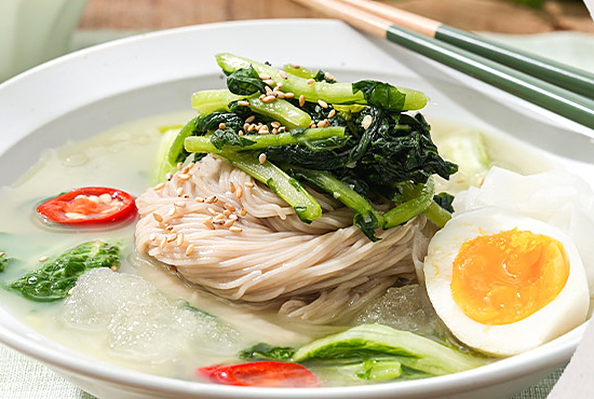

오늘의 한 끼 · 백열무김치

그리운밥상 백열무김치
그리운밥상 백열무김치 그리운밥상 백열무김치
그리운밥상 백열무김치홍석모의 『동국세시기』는 동짓달(음력 11월) 음식으로 냉면을 꼽았어요. 메밀국수를 무김치·배추김치 국물에 말아 먹는다고 적었죠. 따뜻한 방에서 먹는 시원한 국물, 그게 겨울 냉면의 맛이었어요.
섞은 국물을 냉동실에 30~40분 넣어 두면 가장자리에 살얼음이 잡혀요. 아이와 함께 먹을 땐 고추 조각만 덜어 내면 돼요. 고춧가루가 들어가지 않아 국물이 맑고 순해요.
 그리운밥상 동치미 · 백열무김치
그리운밥상 동치미 · 백열무김치동치미 국물로 말아도 좋아요. 무를 채 썰어 올리면 또 다른 맛이에요.